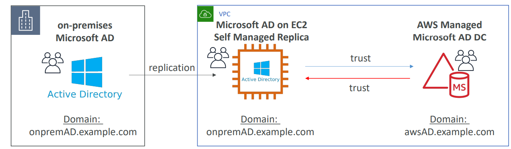

Identity Federation
Identity Federation is used to provide users/entities outside of aws permissions to access aws resources.
Workflow: - Client application authenticates through IDP (Identity Provider) - Post authentication, IDP sends SAML Assertion - Client app calls sts:AssumeRoleWithSAML to STS Service and receives temporary security credentials - App uses credentials to access aws services.
Identity Provider Implementation - IDP can be an active directory (self-managed or aws managed). SAML 2.0 compatible. This is for corporate office users (not web). - It could be social providers as well - this is called as Web Identity Federation and uses OIDC. Cognito is recommended for this use case. - Identity provider is configured in IAM (SAML or OIDC)
IAM supports IdPs that are compatible with OpenID Connect (OIDC) or SAML 2.0 (Security Assertion Markup Language 2.0)
- Web Identity Federation: Useful for mobile app use cases. Use well known IDP such as Google or Facebook or Amazon for sign-in and get token. Exchange this token for short-term credentials that allow aws services access.
Cognito is best suited for Web Identity Federation. If you don't use Amazon Cognito, then you must write code that interacts with a web IdP, such as Facebook, and then calls the AssumeRoleWithWebIdentity API to trade the authentication token you get from those IdPs for AWS temporary security credentials.
- SAML 2.0 Federation: This feature enables federated single sign-on (SSO), so users can log into the AWS Management Console or call the AWS API operations without you having to create an IAM user for everyone in your organization.
AWS SSO is best suited for SMAL 2.0 Federation. However, SSO supports only web and not mobile app (OIDC).
Federation Services:
SAML2.0 Federation:
- Integration with Microsoft ADFS (Active Directory Federation Services)
- Under the hood: uses STS AssumeRolewithSAML
- Involves creation of SAML Identity Provider in IAM.
- In the role's trust policy, you set the SAML provider as the principal, which establishes a trust relationship between your organization and AWS.
- Can provide permission policies as usual. For trust policy, the principal here would be saml-provider
SAML Assertion Workflow with SSO:

Example Trust Policy:
{
"Version": "2012-10-17",
"Statement": [{
"Effect": "Allow",
"Principal": {"Federated": "arn:aws:iam::account-id:saml-provider/ExampleOrgSSOProvider"},
"Action": "sts:AssumeRoleWithSAML",
"Condition": {"StringEquals": {
"saml:edupersonorgdn": "ExampleOrg",
"saml:aud": "https://signin.aws.amazon.com/saml"
}}
}]
}
AWS SSO:
- AWS SSO Federation is the new and managed way. Underlying uses SAML 2.0 Federation.
- STS Integration is automatically handled with SSO.
- Integrated with AWS Organizations
- Centralized Permissions Management
- Centralizing auditing with Cloudtrail
- Identity source:
- SSO-built in: manage users & groups
- Active Directory through Directory Services (AWS Managed Microsoft AD or AD Connector)
- External Identity Provider: any SAML 2.0 Identity Provider (e.g., Azure AD, Okta Universal Directory)
- Integration with MS AD
- AWS managed microsoft AD
- AWS Managed Microsoft AD with 2-way forest trust with on-premises AD
- AD Connector to on-premises AD
- Control tower: to automate creation of accounts with organizations through service catalog.
- Preventive – using SCPs (e.g., Disallow Creation of Access Keys for the Root User)
- Detective – using AWS Config (e.g., Detect Whether MFA for the Root User is Enabled)
AWS SSO supports single sign-on to business applications through web browsers only. For mobile apps federated access, Cognito would be a good choice (User Pools for AuthN and Identity Pools for AuthZ). On rare cases, Web Identity Federation without Cognito may be used, but desist from this, since it entails additional overhead.
Custom Identity Broker Application
- Use only if Identity provider is NOT compatible with SAML 2.0
- Disadvantage: The identity broker must determine appropriate IAM role (with SAML 2.0, the assertion has a role)
- Uses STS API AssumeRole or GetFederationToken

Web Identity Federation - without Cognito (not recommended)
- Uses AssumeRoleWithWebIdentity
Web Identity Federation - with Cognito
- Preferred by aws.
- Can create Roles within Cognito with least privileges.
- Key Advantages: MFA, Data sync and anonymous users support.
- Cognito Identity Pools (CIP): Identity pools are used to obtain temporary, limited-privilege credentials for AWS service. An IAM Role is assumed providing access tp aws services.
Cognito User Pools & Identity Pools
- Authenticate with CUP & get JWT Token
- Exchange Tokens for Credentials from CIP
- Use Credentials to access aws services
Web Identity Federation - IAM Policy
- After identity federation, can identify a user in IAM Policy through variables.
- Example: cognito- identity.amazonaws.com:sub (or) accounts.google.com:sub
Directory Services
ADFS (AD Federation Services)
- ADFS provides Single Sign-On across applications
- SAML across 3rd party: AWS Console, Dropbox, Office365, etc…
AWS Managed Microsoft AD
- Enables use of managed Active Directory in the AWS Cloud.
- Establish “trust” connections with your on-premises AD. (I.e. extend on-premises AD)
- To connect to on-premises AD, Must establish a Direct Connect (DX) or VPN connection
- Multi AZ deployment of AD in 2 AZ, # of DC (Domain Controllers) can be increased for scaling
- Automated Multi-Region replication of your directory
- For AD Replication, the data can be replicated to an EC2 managed AD & establish trust-relationship with aws managed Microsoft AD.
- EC2 instance can be joined to a domain using permissions assigned to a role

AD Connector
- Gateway to redirect directory requests to an on-premises AD (via VPN or Direct Connect), without caching any information in the cloud.
- Enables on-premises users to access AWS Services via Active Directory.
- Users are managed on-premises
- Supports MFA
- Provides federated sign-in to the AWS Management Console by mapping Active Directory identities to IAM Role
Simple AD
- Provides low-scale, low-cost basic Active Directory capability.
- Cannot be joined with on-premises AD.
- Supports joining EC2 instances, manage users and groups
- No trust relationship
Scenarios
Question:
The system admin would like to rely solely on the company’s on-premises Active Directory to use existing user credentials. A user portal for logins and MFA is required for easy access and added security.
Answer:
Use AD Connector for User Authentication and SSO for User Access. AD Connector can redirect directory requests to an on-premises AD.
Best Practices and Gotchas
- Ability to create and manage AWS accounts via the AWS Management Console and API.
- Restricting the usage of AWS services per AWS account with a Service Control Policy (SCP).
AWS CloudFormation Stack Sets can be used to deploy your Infrastructure as Code templates to multiple/all AWS accounts within your organization.